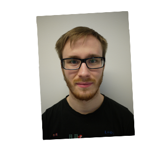

Kyrre ser på seg selv som en selvstendig, positiv og engasjert person. Som liker å få ting gjort når han har først startet. Derfor liker han også en utfordring og gir seg ikke før problemet er blitt løst. Kyrre kommuniserer godt med andre personer og liker å bidra i prosjekter.
- Utdanning
-
University of Oslo (UiO)august 08 - juni 13
Master: Informatikk: design, bruk, og interaksjon
Masteroppgave: Implementation of text-editors for domain-specific languages
Utvikling av et fult fungerende tekst-programmeringsverktøy for språket ThingML. Funksjoner som ble implementert er som følgende: syntax highlighting, code suggestion/completion, outline/syntax tree, og error-reporting. Funksjonen ble valgt ut fra brukerundersøkelser, som spørreskjema og observasjon av brukere mens de programmerte.
Kyrres masteroppgave har han forsket på forskjellige tekst-programmeringsverktøy som enkelt kan implementeres med domene-spesifikke språk utviklet i Eclipse Modeling Framework. Etter testing av implementasjon av språk og sammenligning av åpen data endte han opp med å bruke RSyntaxTextArea, og da utviklet en fult fungerende tekst-programmeringsverktøy for språket ThingML.
Nedlasting: DUO
Bachelor: IT: språk, logikk, og psykologi
Voss Folkehøgskole august 06 - mai 07
Nesbru VGS august 03 - juni 06
Barneskole august 94 - juni 03
- Fag tatt på UiO
-
Informatikk
- INF1000 - Grunnkurs i objektorientert programmering
- INF1010 - Objektorientert programmering
- INF1040 - Digital representasjon
- INF1060 - Introduksjon til operativsystemer og datakommunikasjon
- INF1510 - Bruksorientert design
- INF1800 - Logikk og beregninger
- INF2220 - Algoritmer og datastrukturer
- INF2810 - Funksjonell programmering
- INF2820 - Datalingvistikk
- INF3800 - Søketeknologi
- INF5110 - Kompilatorteknikk
- INF5120 - Modellbasert systemutvikling
- INF5150 - Uangripelige IT-systemer
- INF5181 - Prosessforbedring og smidige metoder i systemutvikling
- INF5261 - Development of mobile information systems and services
- INF5722 - Eksperimentell design av IT
Filosofi
- EXPHIL03 - Examen philosophicum
- FIL1001 - Innføring i metafysikk og bevissthetsfilosofi
- FIL1004 - Innføring i logikk og språkfilosofi
- FIL2105 - Fordypning - Metafysikk og bevissthetsfilosofi
- FIL2207 - Fordypning - Handlingsfilosofi
Annet
- HUMIT1731 - Hypermerdier
- ITSLP1100 - Introduksjon til kognitive vitenskaper
- Arbeidserfaring
-
Dfindaugust 17 - d.d.
Ciberaugust 13 - juli 17
- Ansatt som IT-konsulent og Java utvikler, etterhvert senior Java utvikler. Jobbet med Java i prosjekter som Labsys 2011 og Autosys Enkeltgodkjenning (Statens Vegvesen), Valutaregistrert innrapportering (Toll- og avgiftsdirektoratet). De siste to årene jobbet jeg som DevOps-utvikler i prosjektet Interaktive tjenester(ITAS (Oslo kommune – Utviklings- og kompetanseetaten).
Knowitjuni 12 - august 12
- Sommerjobb hos Knowit som Java og Ruby utvikler. Jobbet på prosjektet Interaktive tjenester (ITAS) hos Oslo Kommune. Lagde et overvåkingsverktøy i Ruby, og jobbet med testing av Camel-transaksjoner.
Kirkens Nødhjelpjuni 08 - mai 12
- Assisterende sekretær og altmuligmann, alt fra frankering til redigering av filmer.
Universitetet i Oslojanuar 2012 - mai 2013
- Gruppelærer for Arduino og bruksorientert design kurset INF1510. Hadde hovedansvaret for Arduino-delen av kurset. Både forelesning og gruppetimer.
Universitetet i Osloaugust 09 - desember 10
- Gruppelærer for Java kursene INF1000 og INF1010. Hjalp studentene med ukesoppgaver og obligatoriske oppgaver i kursene.
Smart Club Alnabrujuni 09 - august 09
- Butikkmedarbeider i elektronikkavdelingen.
Coop Lærdaljuni 08 - juli 08
- Butikkmedarbeider i matbutikk.
Voss Folkehøgskolejuni 07 - juni 08
- Siviltjeneste/miljøarbeider - Ansvarlig for skolens kiosk, sosiale aktiviteter og påse at alle blir inkludert.
Voss Sommerleirjuni 07 - juli 07
- Leirleder på sommerleir for ungdom i alderen 10 til 13 år.
Esso On The Runaugust 02 - juli 06
- Butikkmedarbeider på bensinstasjon.
- Frivillig arbeid
-
Hagegata 5 Borettslagmai 16 -> d.d.
- Styreleder for borettslaget Hagegata 5, består av 15 leiligheter.
Kjølberggata 1 ASmai 13 - mai 14>
- Styreleder for aksjelaget Kjølberggtata 1 AS, består av 70 leiligheter.
Universitetet i Osloaugust 11 - mai 13>
- Ansatt i Åpen Sone, hvor jeg var ansvarlig for rommet, nettsidene, og utstyret. Holdt også kurs i Android og Arduino.
Retro1.no V10 -> d.d.
- Administrator og vedlikehold av nettbasert forum.
OSI Squashmai 09 - mai 12
- Ansvarlig for nettsiden og e-post.
Fordelingsutvalget for IFIH10 - V11
- Styremedlem/representant for IT:SLP/P:ISK.
Programutvalget for ITSLP/ISKV09 - V11
- Styremedlem og ansvarlig for sosiale sammenkomster, og senere ansvarlig gruppelærer for studenter som tok bachelor i ITSLP/ISK.
Asker og Vardåsen menighetV04 - V08
- Konfirmantleder i Asker og Vardåsen menighet, vært med på flere konfirmantleierer, og andre sosiale sammenkomster. Jobbet også en liten periode som kirketjener i Vardåsen kirke.
KRIK og MiniKRIKV04 - V06
- Leder og utstyrsansvarlig i KRIK Vardåsen og MiniKRIK.
- Prosjekter for Ciber
-
Interaktive tjenester (ITAS) - Oslo Kommunefebruar 15 - d.d.
- Knowit har hatt ansvaret for nyutvikling og forvaltning av Oslo kommunes sentrale meldingsinfrastruktur og integrasjonsplattform, samt kommunens felles katalogtjenester. Oppdraget dekker områder som skjemarammeverk, integrasjonsrammeverk og infrastrukturen som dette kjører på. Gjennom >300 interaktive skjemaer gir skjemarammeverket borgere, ansatte og næringsliv et brukergrensesnitt mot kommunens elektroniske tjenester. Integrasjonsrammeverket tilbyr på sin side et internt systemgrensesnitt mellom kommunens interne systemer og virksomheter, og et eksternt grensesnitt mot systemer hos eksterne leverandører, offentlig organer, registre etc. Katalogtjenestene er et sett med tjenester og infrastruktur som ivaretar behovene tilknyttet en sentralisert IAM (identity Access Management) løsning.
- Min oppgave har vært å jobbe med infrastrukturen og vedlikeholde verktøyene som gjør det enklere for de andre utviklerene å jobbe. Rammeverk som da har vært viktige er Jenkins, Github, Kibana, Grafana, Nagios, scripts for deploy o.l., og Puppet. Har også hatt ansvar for de tre Ruby on Rails komponentene som kjører på plattformen. Det siste halvåret i prosjektet var je gogså team lead for Infrastruktur, fordeling av nye oppgaver og planlegging av hva vi burde fokusere på i sammarbeid med Utvikling og Kompetanse etaten ble noen av mine nye arbeidsoppgaver
- Java, Ruby, Jenkins, Git, Github, Puppet, Java, Apache ActiveMQ, JMSAdmin, Nagios, Apache Camel, Spring, Scala, Python 2.7, Bash, REST, SOAP, JSON, XML, XSLT
Entyvio.no - Nycomeddesember 2014
- Større og mindre endringer på en produktisde for Nycomed. Der de hadde problemet med slideshow på forsiden. De ønsket også en bekreftelses-pop-up når man ankom siden, og en når man gikk fra nettsiden til URL'er utenfor domenet
- Wordpress, PHP
Labsys 2011 - Statens Vegvesenseptember 14 - desember 14
- Omfattende moderniseringsprosjekt av Labsys Web som er et laboratoriesystem for kvalitetssikring av asfalt, betong, grus og geologiske undersøkelser i forbindelse med vegprosjekter i Statens Vegvesen. Prosjektet endret hele applikasjonen fra datamodell til brukergrensesnitt. Applikasjonen ble skrevet om fra Struts og EJB 2 til en mer moderne plattform basert på blant annet Java 1.6, Spring og Hibernate. Systemet er nå i forvaltning
- Java 6, Spring MVC, Spring WS (SOAP), Hibernate, HTML, JSP/JSTL, CSS, JavaScript/jQuery, JUnit, Mockito
Orkla Support Mobile Applikasjon - Orkla ASAaugust 14 - oktober 14
- Mobil applikasjon for å melde inn support henvendelser. Applikasjonen er delt i 3 menyer som er Meld Sak, Profil, Historikk. Brukere kan sende e-post med vedlegg og ringe fra applikasjonen
- Phonegap, JavaScript, JQuery, HTML5, CSS
Valutaregistrert innrapportering - Toll- og avgiftsdirektoratetmars 14 - august 14
- Toll- og avgiftsdirektoratet ønsket seg en mulighet for sluttbrukere til å rapportere inn transaksjoner til Valutaregisteret via en webklient. Systemet er en java webapplikasjon basert på Spring og Hibernate
- Jeg hadde hovedansvaret for CRON-jobbene som leverte nye transaksjoner en gang i døgnet, og kommunikasjonen med ekstern server hos Valutaregisteret. Jobbet også med frontend og backend.
- Java 7, Spring, Hibernate, PostgreSQL, JSP, HTML, Bootstrap, j2SSH, WCAG
Autosys Enkeltgodkjenning - Statens Vegvesenaugust 13 - februar 14
- Prosjektet gikk ut på å videreutvikle enkeltgodkjenning og kundedel av autosys-systemet. Dette er et system for å enkeltgodkjenne/typegodkjenne et kjøretøy, på bakgrunn av en robust regelmotor. Prosjektet hadde fokus på testdreven utvikling. Dette inneholdt automatisering av testing og utvikling av enhetstester og integrasjonstester
- Hovedoppgavene var forvaltning og videreutvikling av systemet. Vedlikehold av regelmotor på bakgrunn av kjøretøyforskriftene. Skrevet ny generator for regelgenerering. Implementering av ny funksjonalitet
- Java, Android, SQLDeveloper, database, Oracle SQL, HTML/XML, JavaScript, SOAPUI, Kanban, TDD, Regelmotor, Hibernate, Smidig
- Egne prosjekter
-
Mobilside for Arcon/Spillfestivalen.noH16 - V17
- Lagd nytt responsivt program for Arcon/Spillfestivalen. Vil første gangen bli brukt sommeren 2017, under Arcon 33
- Javascript, ListJS
Yey/Ney prototypeH16
- Lagd en prototype app for en tart-up som heter Yey/Ney. Appen skulle hjelpe ungdom og unge voksne å spare penger. Man kunne ta bilder av et produkt du hadde lyst på, og dele det med vennene dine, så kan de stemme på om du burde kjøpe det eller spare pengene
- Android, Firebase
Tag StoryH12 - V16
- Tag Story startet som et student prosjekt i faget 'Development of mobile Information systems and services'. Tag Story er en app som skal hjelpe folk opp av sofaen og ut, ved å gi brukeren en interaktiv opplevelse tilnærmet gammeldagse tekstbasert dataspill. Hver historie inneholder flere 'tags' (enten GPS, QR, eller NFC), som brukeren må navigere imellom. Hver gang man finner en ny tag får man neste del av historien (enten ved bruk av bilder, lyd, eller tekst). Man kan også interagere med historien ved spørsmål, slik at man kan påvirke hvor man skal. Foreløpig er TagStory (se www.TagStory.no) kun et rammeverk, men har blitt gitt ut en gang under navnet Hev Stemmen, som et samarbeidsprosjekt med Klimanettverket for Stortingsvalget 2013. Fra og med november 2014 vil TagStory inngå et samarbeid med Digital Spaces Living Lab i Sofia, Bulgaria, for videre utvikling.
- Android, Ruby backend, Haml frontend with Javascript, Heroku and Amazon Web Service
Red-Zone.no - Kulturkirken JakobV13 - V16
- Kulturkirken Jakob ønsket seg en enkel nyhetsbasert nettside for prosjektet Red-Zone. Mitt arbeid har vært å installere, finne design, og tilpasse designet til Red-Zone. Dette er gjort to ganger, da man byttet nettsider våren 2015. Arbeidet har hovedsakelig bestått av å installere en clean versjon av Wordpress, og tilpasse et design, og skriving av PHP-kode.
- Wordpress
Heroclix Rules/Clix’em AllV04 - V06
- Lagd to populære Android applikasjoner for å lære meg Android. Heroclix Rules er den første appen jeg har lagd og er et oppslagsverk for regler. Har blitt lastet ned av over 50 000 stk. Heroclix 'em All er en oversikt over miniatyrene i spillet, appen lar deg også holde en oversikt over hvilke du har, ønsker deg, eller har ekstra av.
- Android, SQLite
UiO: Energi - EnergispilletH14
- Fikk i oppdrag å lage et spill for UiO:Energi festivalen som ble avholdt 15. september. Skulle brukes mot barn og ungdom for å forklare hvordan energiproduskjon skjer. Spillet gikk ut på at du hadde fem forskjellige energikilder som man styrte produksjonen med, produksjonen måtte tilpasses forbruket igjennom et døgn. Spillet ble laget i rammeverket LibGDX som bygger på OpenGL, og ble levert som et Android- og desktop-produkt
- Android, LibGDX
Ciber Mangekamp nettsideH15 - H16
- Laget en app for å holde oversikt over sesonger og øvelser Ciber BIL Mangekampen har. Dette var veldig ønsket av de ansvarlige, da dette opprinnelig ble styrt i et meget avansert og gammelt Excel ark. Selve løsningen bestod av en Ruby on Rails app, med en veldig sparsomlig front end. Da funksjon var viktigere enn utseende.
- Ruby, Ruby on Rails, Haml, PostgreSQL
Ciber Developer Update nettsidejuli 14
- Nettside for Cibers egen utviklerkonferanse. Nettsiden gir deg oversikt over alle foredragene, hvor foredragene er, og lar deg stemme pluss legge igjen en kommentar. Alt blir tilrettelagt for mobiltelefoner. Laget i Ruby ved bruk av rammeverkene SinatraRB og Active Records. PostgreSQL database i bunnen
- Ruby, Sinatra, Haml, Javascript, PostreSql
EyeCatch - Høgskolen i Oslo og AkershusH13 - V14
- Samarbeidet med en doktorgradstudent med å utvikle et spill for barn med autisme, til Android tablets. Spillet går ut på å lære barn med autisme å følge øyne/blikk. På skjermen er det et ansikt som ser på bokser rundt ansiktet. Barnet skal da trykke på riktig boks. Det føres også statistikk, slik at man kan følge progresjonen til barnet over tid.
- Android
Protega App - Konsept-It12
- En varehus-løsning for Protega Boxon AS. Appen var en oversikt over produkter som de solgte, slik at de kunne kutte ut å bruke papir når de var ute hos kunde. Appen ble bygd for Android tablets ved bruk av native Android, SQLite, og en php-server for å kunne hente kundeinformasjon og produkter.
- Android, SQLite
UiO:200 - Skattejegerenjuni 11 - juli 11
- Lagde en skattejakt-app for UiO:200 jubileet i samarbeid med en studiekamerat. Appen er laget i samarbeid med Idéfestivalen 17. september på Universitetet i Oslo. Applikasjonen vil guide deg rundt på Blindern og nede i Oslo sentrum og la deg utforske UiO sine bygg
- Android
- Egenskaper
-
Programmeringspråk
- Ruby, Python, Java, Android, Javacsript, Lua, Haml, Bash, Processing, Arduino, ThingML (Master/Sintef), UML, og Eclipse Modeling Language (EMF)
Rammeverk
- Ruby on Rails, Sinatra, Puppet, Docker, Spring/Spring Boot
- Jenkins, Nagios, Git, Github Enterprise, Openshift, Kibana, Grafana
- Rsyslog, Logstash/Filebeat, Löve2D, LibGDX
- Bootstrap, PureCSS, jQuery, ListJS
- Linux operativsystemer (Ubuntu, RHEL6&7, Alpine, CentOS)
Kurs/konferanser/sertifiseringer
- OpenShift Container Platform Roadshow
- ScrumAlliance Certified ScrumMaster
- 1Z0-803 - Java SE 7 Programmer I
- Javazone 2013, 2014, 2015, 2015
- CodeSchool - Report card
Språk
- Norsk, morsmål
- Engelsk, skriftlig og muntlig flytende
Annet
- Holdt foredrag og kurs for/hos Ciber Norge, Universitet i Oslo, og The Gathering. Har da snakket om rammeverk som jeg har ekstra interresse for, slik som Android, Ruby, Puppet, Docker, Openshift, Arduino, Processing, Lua/Löve2D
- På vidregåendeskole gikk jeg grunnkurs byggfag og VK1 betong
- Hobbyer
- Ser meg selv som en aktiv og kreativ person, så trives like godt på landeveisykkelen min som inne for å spille brettspill. Drives også aktivt med klatring, og mindre aktivt med squash, telemark, koding, og radiostyrte biler. Liker å ha småprosjekter, som for eksempel disse to Arduino prosjektetene jeg har lagt ut på sidene til Åpen Sone; Green Boatnet og det litt større prosjektet Loopy Tangible.
- Referanser
- Tilgjengelig ved forespørsel